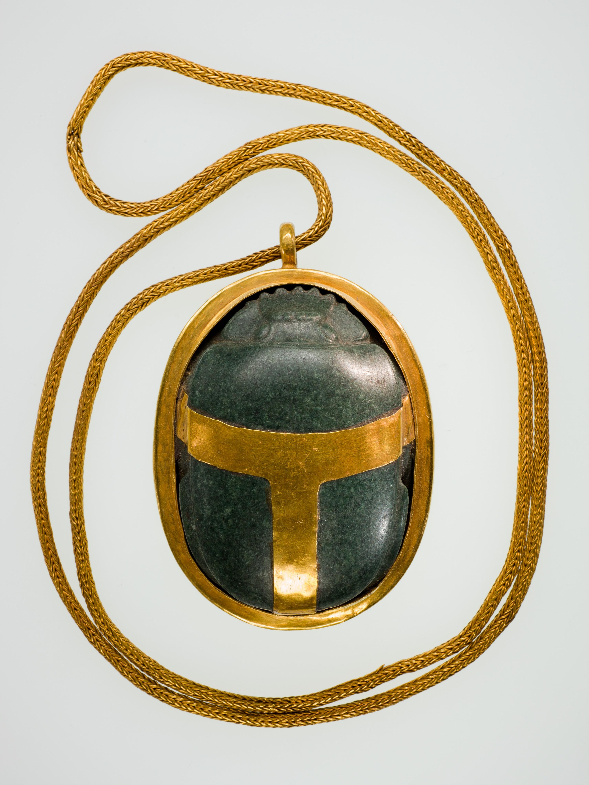
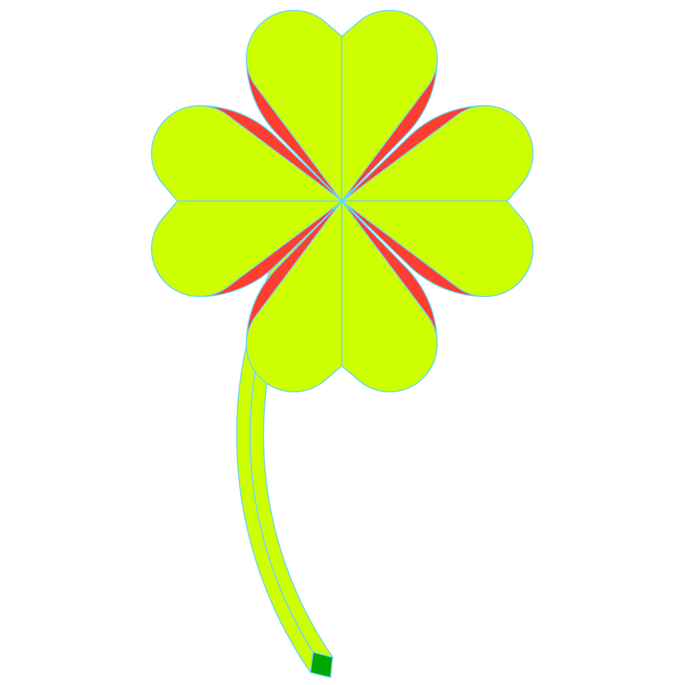
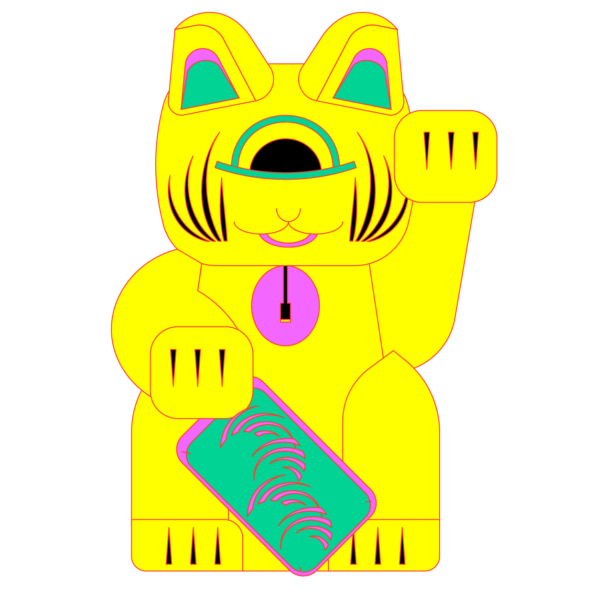
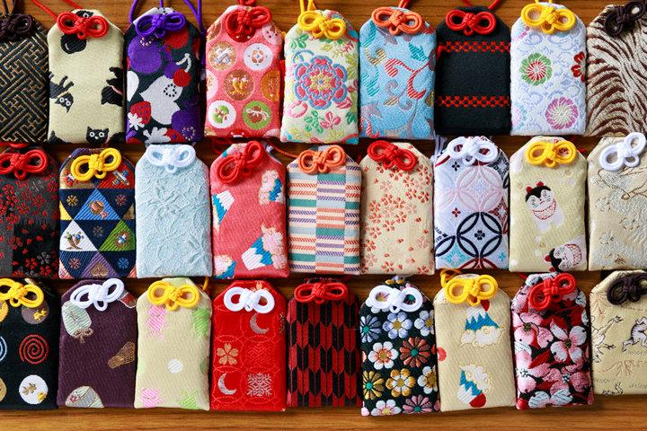
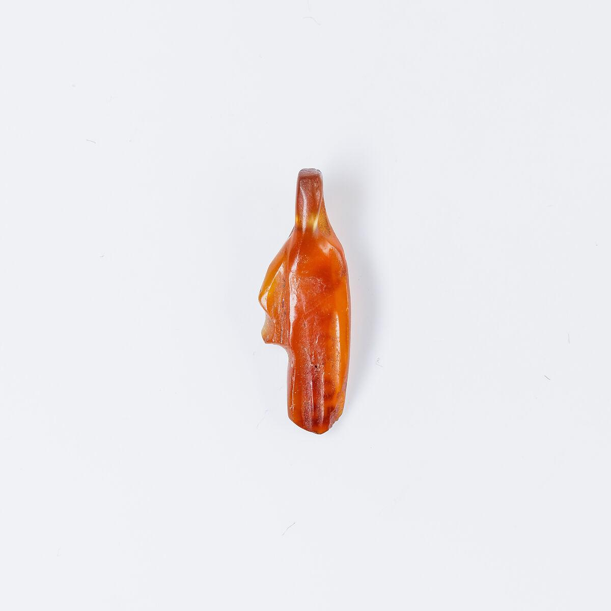
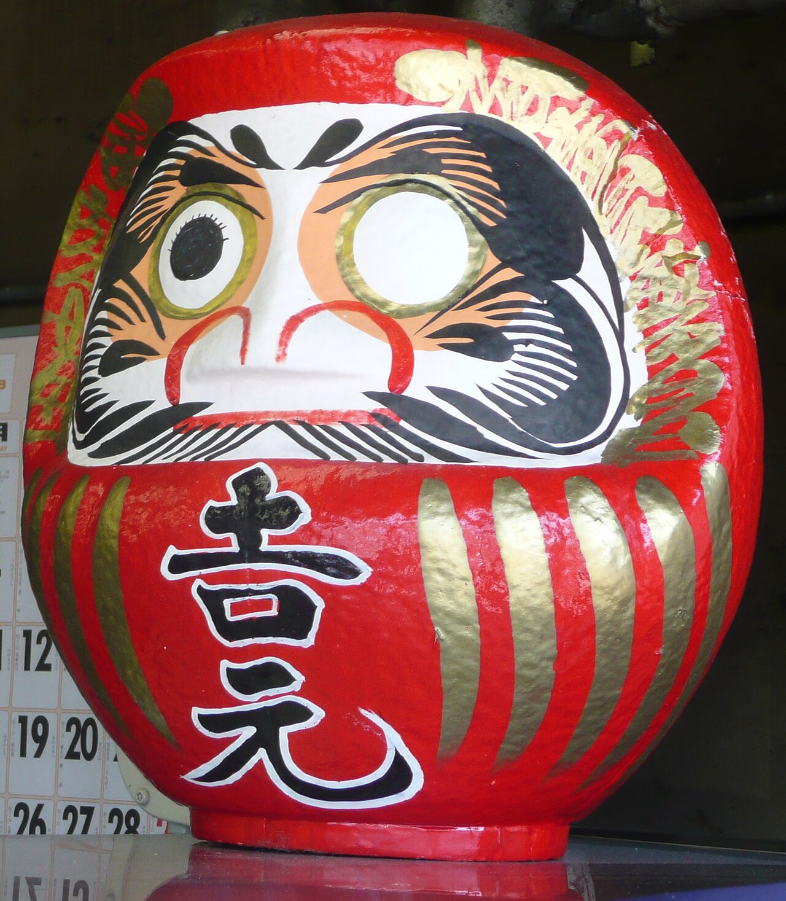
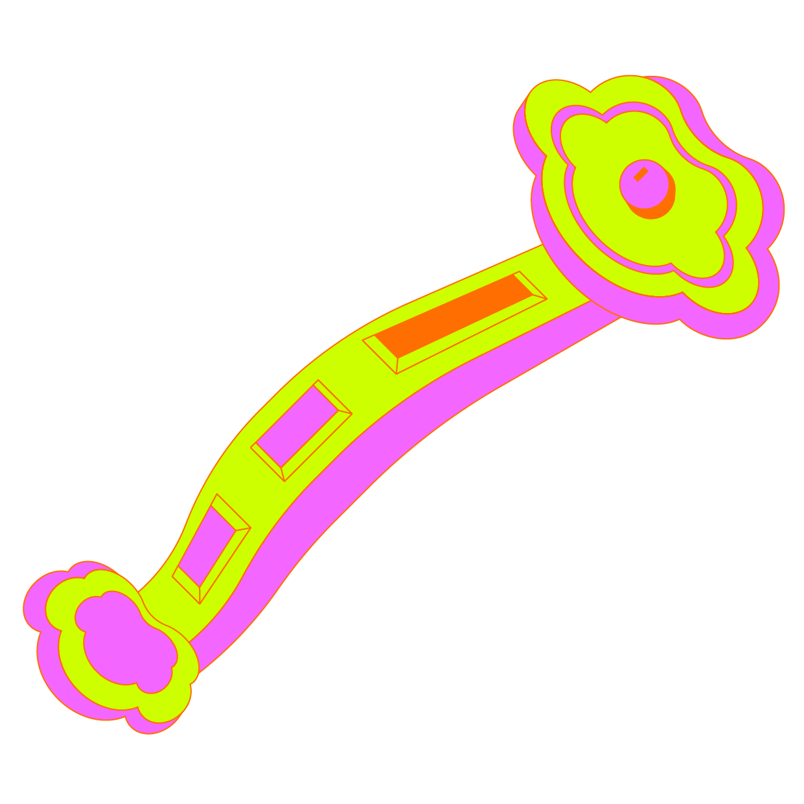
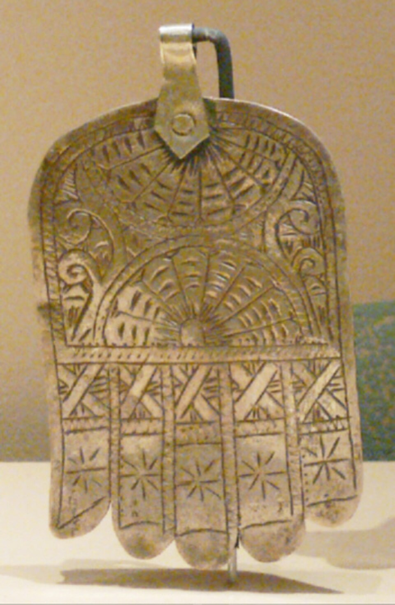
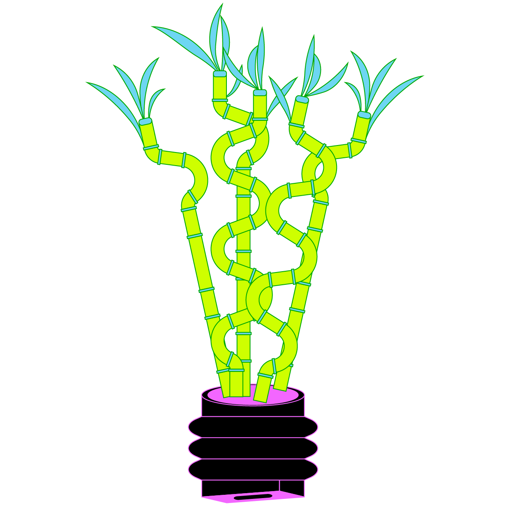

Ancient Egypt
Scarab amulet, Unknown artist, 664–380 BCE. The Metropolitan Museum of Art. Public Domain.

Egyptian Scarab
Ancient Egypt

Egyptian Scarab
Europe

Four-Leaf Clover
The four-leaf clover is perhaps one of the most recognizable symbols of good luck. A rare variation of the common three-leaf clover, it has four leaflets instead of three. Its unusual appearance and rarity have made it a symbol of good fortune.
The exact origin of this belief remains uncertain. Four-leaf clovers have been associated with good fortune in European folklore for centuries. In 1620, English writer John Melton recorded the belief that finding one in a field meant something good was about to happen.Read more about the history of clovers.
Roughly one in every 5,000 clovers has four leaflets. A large-scale survey cited by the Florida Museum of Natural History found approximately one four-leaf clover for every 5,076 three-leaf clovers. Earlier estimates often put the odds at one in 10,000. Perhaps finding one feels lucky simply because it is so unlikely.
Japan

Maneki-neko
Maneki-neko, literally “beckoning cat,” is also known as the lucky cat. Usually made of ceramic or plastic, these little cats sit behind cash registers in restaurants and shops, or on shelves at home, with one paw raised in a welcoming gesture. Some even have mechanical paws that slowly wave back and forth.
It depends on which paw is raised. Traditionally, the right paw invites money and good fortune, while the left welcomes people and customers. Color matters, too: white for happiness and purity, black for protection against bad luck, gold for wealth, red for health, and blue for success in school or work. Each cat seems to have its own job. More about the meanings of maneki-neko.
Maneki-neko became popular toward the end of Japan’s Edo period, although its exact origins remain uncertain. One of the best-known stories comes from Gōtokuji Temple in Tokyo. According to the legend, the feudal lord Ii Naotaka was returning from falconry when he noticed a cat beckoning to him from the temple gate. Curious, he followed it inside. Soon after, a thunderstorm broke out. The cat had apparently saved him from getting soaked. Grateful for the shelter and his conversation with the temple priest, Naotaka later became a patron of the temple. The cat was eventually honored as Shōfuku Byōji, the “cat that invites happiness.” There is also something interesting about what these cats promise. As The Conversation points out, while the English-speaking world often repeats the saying “money can't buy happiness,” praying for material prosperity has a place in Japanese religious practice. The lucky cat makes that wish quite visible.
You can visit the Maneki-Neko Museum in Japan, or head to the Manekineko Art Museum in Okayama, where visitors can even paint their own lucky cat.
Turkey

Nazar Boncuğu
A nazar boncuğu, or “evil eye bead,” is an eye-shaped amulet believed to protect against the evil eye—a harmful gaze thought to bring misfortune. The word nazar is associated with looking, seeing, and attention. These blue glass charms are especially common in Türkiye, where they can be found in homes, shops, cars, and even on clothing.
In Turkish folklore, even a well-intentioned compliment can attract the evil eye. Admiring someone's beauty, success, or possessions may unintentionally expose them to misfortune. A protective charm is one way of dealing with the dangers of being admired. More about the evil eye.
In 2007, a village in western Türkiye officially changed its name from Kurudere to Nazarköy, roughly meaning “Evil Eye Bead Village,” in recognition of its traditional glass-bead production. Explore the history of Nazar Boncuğu.
Japan

Omamori
Ancient Egypt

Hand and Foot Amulets
Japan

Daruma Doll
China

Ruyi Scepter
North Africa / Middle East

Hamsa
China

Lucky Bamboo